Desarrollador
Supercell
Estrategia en tiempo real
Un sitio de una sola página sobre el universo competitivo de Clash Royale, sus reglas principales, personajes, arenas y comunidad.
Explorar el juegoIntroducción
Clash Royale es un videojuego de estrategia en tiempo real desarrollado y publicado por Supercell, lanzado oficialmente a nivel mundial el 2 de marzo de 2016. Este título nace como un spin-off del popular universo de Clash of Clans, combinando mecánicas de juegos de cartas coleccionables, defensa de torres y batallas multijugador en línea. Desde su lanzamiento, el juego logró posicionarse rápidamente como uno de los más descargados en dispositivos móviles, gracias a su formato dinámico de partidas cortas y su profundidad estratégica.
En la actualidad, Clash Royale continúa siendo un referente dentro del gaming móvil competitivo. Con actualizaciones constantes, temporadas mensuales, nuevos personajes —cartas— y eventos especiales, el juego ha evolucionado hacia un ecosistema más complejo y competitivo. Su modelo free-to-play, basado en progresión y microtransacciones, junto con su escena de eSports, lo mantienen vigente y con una comunidad global activa que sigue creciendo año tras año.
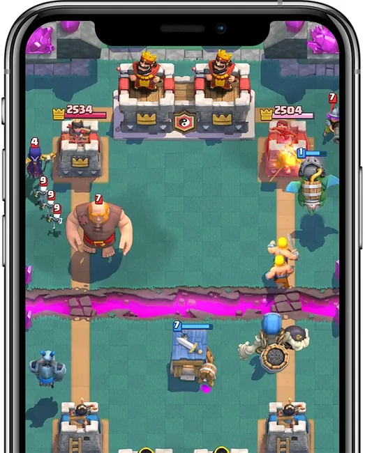
Ficha técnica
Supercell
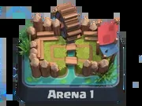
2 de marzo de 2016
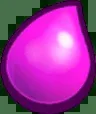
iOS, Android, PC
Estrategia en tiempo real / Cartas / Tower Defense
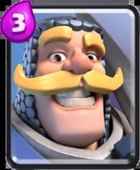
Multijugador (1v1 y 2v2)
Free-to-play (con microtransacciones)
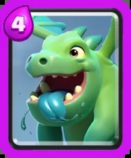
Universo Clash (fantasía medieval)
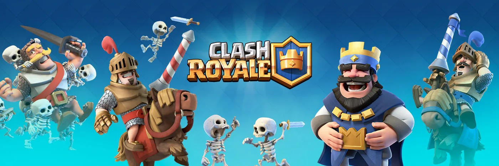
Historia
La historia de Clash Royale no se desarrolla como una narrativa tradicional, sino como la evolución de un sistema competitivo dentro del universo Clash. Su origen se remonta a 2014, cuando Supercell comenzó a experimentar con prototipos que combinaban cartas y combates en tiempo real, dando lugar a un concepto innovador dentro del gaming móvil.
El juego fue lanzado inicialmente en fase beta en enero de 2016 en algunos países, permitiendo ajustar mecánicas y balance antes de su lanzamiento global. Este período fue clave para definir su jugabilidad rápida y competitiva.
Uno de los hitos más importantes fue la introducción de las cartas legendarias, que cambiaron profundamente la estrategia de juego y el diseño de mazos. Con el tiempo, se incorporaron sistemas como ligas, guerras de clanes y temporadas mensuales, consolidando un modelo de juego en constante evolución.
Hoy en día, Clash Royale representa un caso de éxito en la industria móvil, destacándose por su capacidad de adaptación, balanceo continuo y fuerte comunidad competitiva.
Características principales del juego
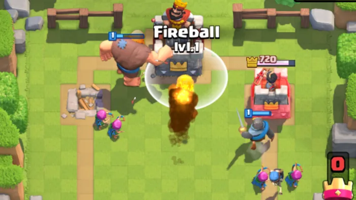
Clash Royale se basa en enfrentamientos 1v1 en tiempo real donde dos jugadores intentan destruir torres enemigas mientras defienden las propias, en partidas rápidas de aproximadamente 3 minutos.
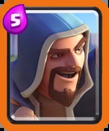
El jugador construye un mazo de 8 cartas que incluye tropas, hechizos y estructuras, combinando estrategias para atacar y defender eficazmente.
El elixir es el recurso clave que se regenera automáticamente y permite desplegar cartas; su correcta administración define el ritmo y éxito de la partida.
Cada jugador posee tres torres y gana quien destruya más o derribe la torre del rey, lo que provoca una victoria instantánea.
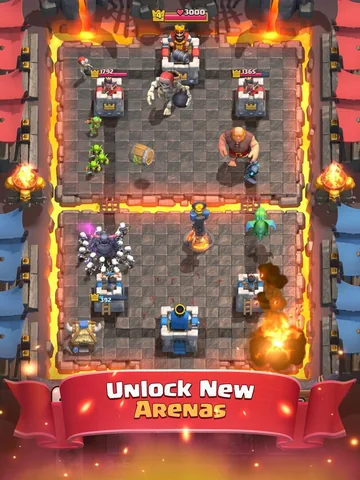
A medida que el jugador gana partidas, obtiene trofeos que desbloquean nuevas arenas, cartas y mecánicas, aumentando la complejidad del juego.
Incluye modos como 1v1, 2v2 y eventos especiales, además de clanes que permiten cooperar, competir y compartir recursos.
Personajes
Coste de elixir: 3 - Puntos de vida: 1399 - Daño: 267 - Velocidad de ataque: 1,2 s
Una tropa cuerpo a cuerpo fiable y equilibrada con buena salud y poder de ataque. Puede sobrevivir a la mayoría de los ataques ligeros y es ideal para contrarrestar unidades frágiles pero poderosas.
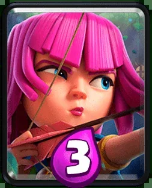
Coste de elixir: 3 - Puntos de vida: 304 - Daño: 107 - Velocidad de ataque: 1,2 s - Alcance: 5
Un par de arqueros habilidosos que usan arcos para infligir daño moderado a distancia. Son efectivos contra tropas aéreas y terrestres, pero pueden ser eliminados fácilmente debido a su poca salud.
Coste de elixir: 4 - Puntos de vida: 1526 - Daño: 189 - Velocidad de ataque: 1,6 s - Daño de área
Un pequeño dragón volador que inflige daño de área. Tiene puntos de vida moderados y es útil para eliminar hordas de tropas.
Coste de elixir: 5 - Puntos de vida: 598 - Daño: 373 - Velocidad de ataque: 1,4 s - Alcance: 5
Un poderoso infligidor de daño de área con letales ataques de área. Ideal para aniquilar hordas y apoyar los ataques desde la retaguardia de los tanques.
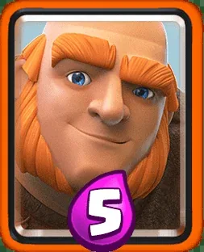
Coste de elixir: 5 - Puntos de vida: 5496 - Daño: 253 - Velocidad de ataque: 1,5 s - Objetivo: Solo edificios
Una unidad de asedio lenta y resistente que aguanta el daño mientras ataca las torres enemigas. Ideal como condición de victoria para crear fuertes ofensivas a su alrededor.
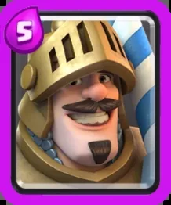
Coste del elixir: 5 - Puntos de vida: 11006 - Daño: 430 - Velocidad de ataque: 1,4 s
Un príncipe con un poderoso ataque cargado que inflige el doble de daño a los enemigos.
Galería
Explora el universo de Clash Royale, capturas de partidas, arenas, personajes y momentos icónicos del juego.
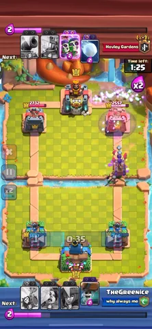
Formulario de contacto
Completá el formulario para recibir novedades, participar en sorteos de la comunidad y enterarte de eventos especiales relacionados con Clash Royale. El formulario es demostrativo y no envía información real.